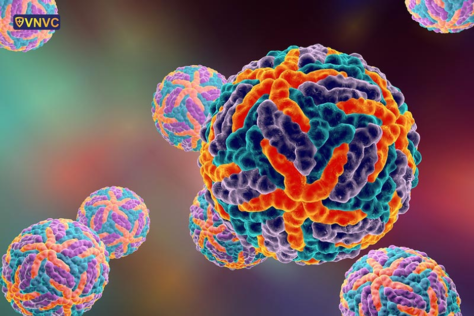
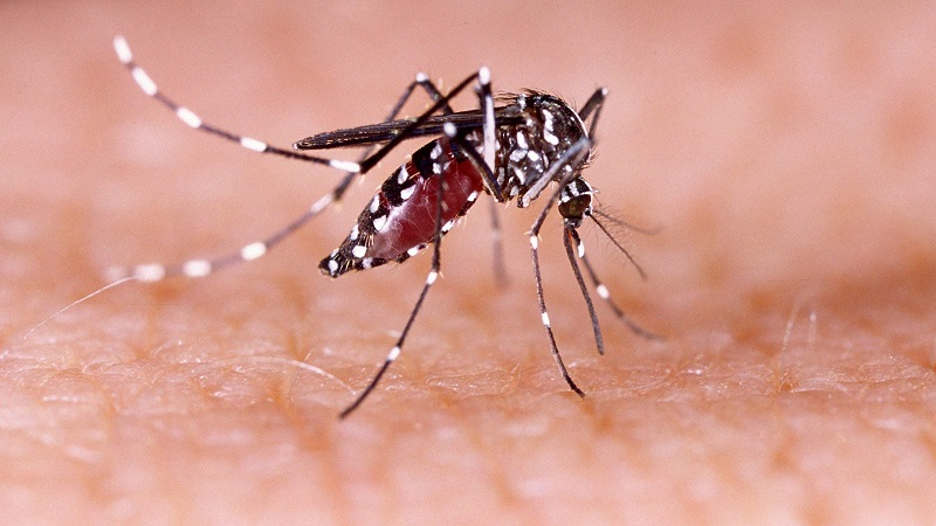
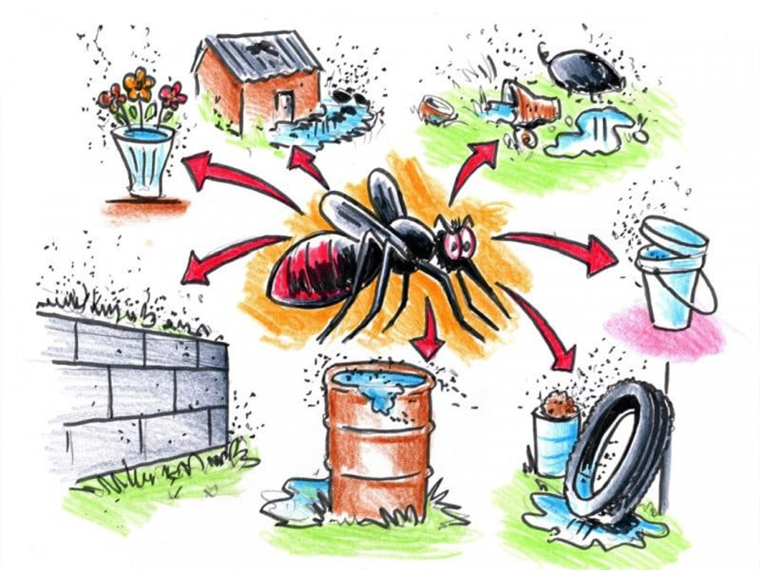

Nguyên Nhân Của Sốt Xuất Huyết

Tác Nhân Gây Bệnh - Virus Dengue
Sốt xuất huyết được gây ra bởi virus dengue, một virus RNA nhỏ thuộc họ Flaviviridae. Virus này có kích thước khoảng 40-60 nm và chứa một bộ gene gồm khoảng 11,000 cơ sở nucleotide.
Có 4 chủng virus dengue khác nhau:
- DENV-1: Lần đầu tiên được xác định vào những năm 1940
- DENV-2: Gây ra các ca bệnh nặng hơn
- DENV-3: Phân bố rộng ở Đông Nam Á
- DENV-4: Ít gặp nhưng cũng lây nhiễm được
Phương Thức Lây Truyền
Đốt muỗi: Virus dengue chủ yếu được truyền qua đốt của muỗi cái Aedes aegypti (muỗi vằn)...
Quá trình lây nhiễm chi tiết:
- Muỗi đốt người bệnh và hút máu có chứa virus
- Virus phát triển trong ruột muỗi trong 8-12 ngày
- Virus di chuyển đến tuyến nước bọt của muỗi
- Muỗi đốt người khỏe mạnh và truyền virus

⚠️ Chỉ muỗi cái mới truyền bệnh, vì muỗi đực không
hút máu. Ngoài ra, người bệnh có thể lây bệnh cho muỗi trong 5-7 ngày
kể từ khi xuất hiện triệu chứng đầu tiên.
Muỗi Aedes aegypti - Vật Chủ Chính
Đặc điểm:
- Có vệt sọc trắng trên thân và chân (gọi là muỗi vằn)
- Kích thước nhỏ (khoảng 2-3mm)
- Hoạt động chủ yếu vào ban ngày (sáng sớm và chiều tối)
- Thích ở nơi ấm, ẩm ướt
- Sinh sản nhanh chóng trong những bình chứa nước sạch
Môi Trường Sống: Muỗi Aedes aegypti thích ở các khu vực đô thị, xung quanh các nhà ở. Chúng đẻ trứng trong các bình chứa nước, bể cảnh, chum nước, hoặc bất kỳ vật chứa nước sạch nào.
Các Yếu Tố Thuận Lợi Cho Sự Lây Lan
- Khí hậu ấm áp: Nhiệt độ 25-30°C lý tưởng cho phát triển virus
- Độ ẩm cao: Giúp muỗi sống lâu hơn
- Mưa nhiều: Tạo nhiều nơi sinh sản muỗi
- Đô thị hóa: Tăng mật độ muỗi và người dân
- Vệ sinh kém: Tích nước sạch cho muỗi đẻ
- Tuyến giao thông phát triển: Virus lan rộng nhanh chóng
